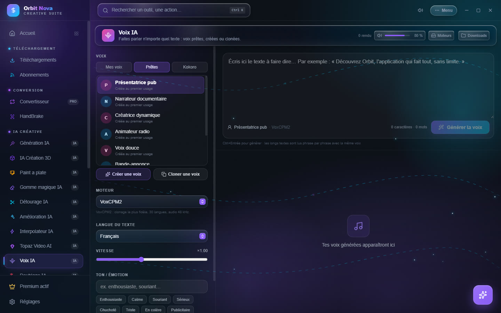
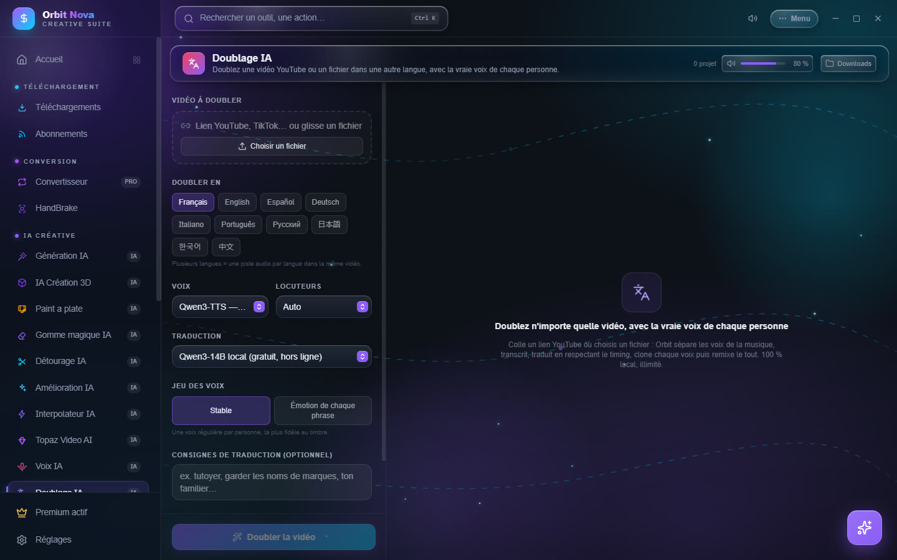
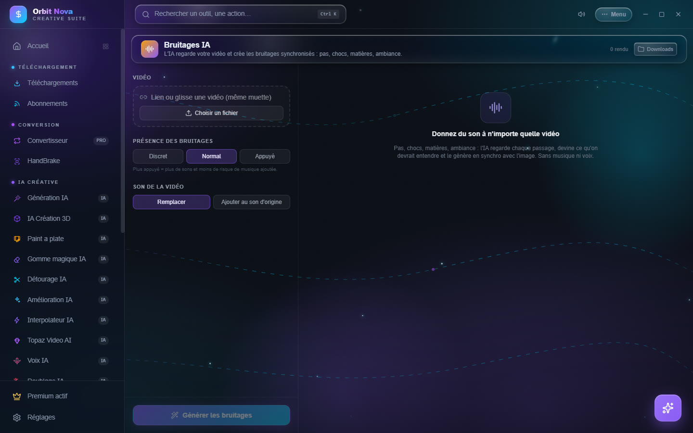
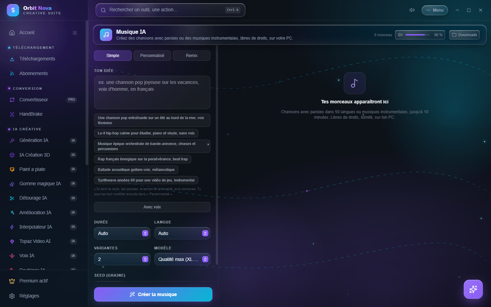
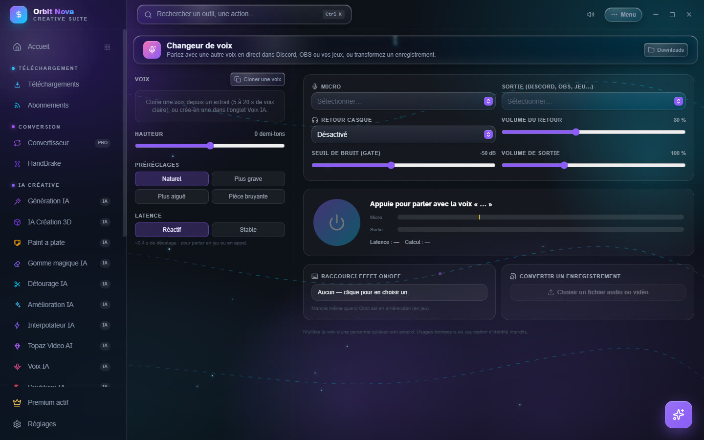

Voix, doublage et musique IA
Cinq outils pour créer du son avec l'IA, sur votre PC : des voix off, le doublage d'une vidéo dans une autre langue, des bruitages, de la musique et un changeur de voix en direct. Ils font tous partie d'Orbit Premium et demandent une carte graphique NVIDIA (sauf Kokoro et le changeur de voix, qui marchent aussi sur le processeur).
Rien n'est envoyé en ligne : pas d'abonnement, pas de limite de caractères, pas de filigrane.
Voix IA
Un studio de voix off : écrivez un texte, choisissez une voix, Orbit la lit.


Installer un moteur
Au premier lancement, Choisir un moteur ouvre la liste des Moteurs de voix :
| Moteur | Points forts |
|---|---|
| Kokoro | Ultra rapide et léger, marche sans carte graphique. Voix toutes faites (une seule voix française). |
| Qwen3-TTS | Crée une voix à partir d'une description et clone un extrait. Très naturel en français. |
| VoxCPM2 | Le clonage le plus fidèle, 30 langues, audio 48 kHz. Crée aussi des voix par description. |
La première installation ajoute aussi PyTorch (environ 3 Go), partagé par les trois moteurs.
Générer une voix
- Choisissez une voix dans Mes voix (voix Prêtes, Créées ou Clonées).
- Écrivez le texte. Réglez la Langue du texte, la Vitesse et, avec VoxCPM2, le Ton / émotion (par exemple « enthousiaste, souriant »).
- Générer la voix (ou
Ctrl+Entrée). Les longs textes sont lus phrase par phrase avec la même voix.
Chaque rendu arrive dans l'historique : Écouter, Exporter en MP3, Ouvrir le dossier (WAV) ou
Réutiliser texte, voix et seed. Les fichiers sont rangés dans Téléchargements\Orbit\Voix IA.
Créer une voix avec des mots
Créer une voix : décrivez la voix (genre, âge, timbre, accent…), écrivez une Phrase d'essai, puis choisissez 1 essai ou 3 essais. Écoutez, gardez votre essai préféré et donnez-lui un Nom. La voix gardée sonnera toujours pareil.
Cloner une voix
Cloner une voix : glissez un extrait audio ou vidéo, puis choisissez la Partie à cloner (5 à 30 secondes d'une seule voix) sur la forme d'onde. Utiliser cette partie retire la musique, les bruitages et le bruit de fond, puis transcrit ce qui est dit. Comparez Voix nettoyée et Originale, corrigez la transcription si besoin, puis Enregistrer la voix.
Ne clonez que votre propre voix ou celle d'une personne qui vous a donné son accord.
Doublage IA
Double n'importe quelle vidéo dans une autre langue, avec la vraie voix de chaque personne.


- Vidéo à doubler : collez un lien (YouTube, TikTok…) ou Choisir un fichier.
- Doubler en : une ou plusieurs langues. Plusieurs langues = une piste audio par langue dans la même vidéo.
- Jeu des voix : Stable (une voix régulière par personne, la plus fidèle au timbre) ou Émotion de chaque phrase (chaque réplique reprend le ton de l'original : cris, chuchotements…).
- Traduction : Qwen3-14B en local (gratuit, hors ligne) ou Claude avec votre clé API. Vous pouvez ajouter des Consignes de traduction (tutoyer, garder les noms de marques…).
- Options : Garder la piste originale, Ajouter les sous-titres. Puis Doubler la vidéo.
Orbit télécharge la vidéo, sépare les voix de la musique, transcrit, reconnaît qui parle, traduit, clone chaque voix, cale chaque réplique sur le timing et remixe le tout.
Le projet s'ouvre ensuite dans l'éditeur :
- Répliques : corrigez un texte, Écouter l'original, Écouter le doublage, Autre prise (même texte) ou Régénérer cette réplique ;
- Voix : renommez chaque locuteur ou remplacez Sa vraie voix par une voix de l'onglet Voix IA ;
- Exporter avec les modifications refait seulement ce qui a changé.
Un doublage interrompu peut être repris là où il s'est arrêté. Les vidéos finies sont dans
Téléchargements\Orbit\Doublage IA.
Bruitages IA
Donne du son à n'importe quelle vidéo, même muette : pas, portes, moteurs, vent, impacts…


- Vidéo : collez un lien ou Choisir un fichier.
- Présence des bruitages : plus appuyé = plus de sons et moins de risque de musique ajoutée.
- Son de la vidéo : Remplacer le son, ou Ajouter au son d'origine (avec le dosage Son d'origine / Bruitages).
- Générer les bruitages.
L'IA regarde la vidéo passage par passage, décrit ce qu'elle va faire entendre, puis génère des sons calés sur
l'image. Pour corriger un passage, modifiez sa description (en anglais de préférence) et relancez : seuls les
sons sont refaits. Autre version donne une variante. Résultat en MP4 + WAV dans
Téléchargements\Orbit\Bruitages IA.
Musique IA
Compose des morceaux complets, avec ou sans voix, à partir d'une idée. Moteur ACE-Step 1.5 (licence MIT : vos morceaux vous appartiennent).


Trois modes :
- Simple : décrivez votre idée (« une chanson pop joyeuse sur les vacances, voix d'homme, en français »), puis Créer la musique. L'IA écrit le style et les paroles pour vous.
- Personnalisé : écrivez vous-même le Style et les Paroles (ou Écrire les paroles avec l'IA), choisissez Instrumental ou Avec voix, la Durée, la Langue, le Tempo (BPM), la Tonalité et le nombre de Variantes.
- Remix : glissez un morceau de départ, décrivez le Nouveau style et réglez la Fidélité au morceau (bas = style très libre, haut = garde la mélodie et la structure).
Un morceau d'une minute se compose en moins d'une minute sur une RTX récente. Dans l'historique : Exporter en MP3, Remixer ce morceau, Réutiliser les réglages ou Refaire un passage (seul ce passage est recomposé, le reste ne bouge pas).
Changeur de voix
Parle avec une autre voix en temps réel, dans Discord, OBS ou un jeu.


- Installer le changeur de voix (sans carte NVIDIA, il tourne sur le processeur).
- Choisissez une Voix : une voix de l'onglet Voix IA, ou Cloner une voix depuis un extrait de 5 à 20 secondes de voix claire.
- Choisissez le Micro et la Sortie. Pour Discord ou OBS, installez un câble audio virtuel (par exemple VB-CABLE) et choisissez-le comme sortie : dans Discord, sélectionnez-le ensuite comme micro.
- Démarrer.
Réglages utiles :
- Latence : Réactif (environ 0,4 s de décalage, pour parler en jeu ou en appel) ou Stable (environ 0,65 s, trois fois moins de calcul, pour un PC modeste ou très chargé) ;
- Hauteur en demi-tons, Seuil de bruit (gate), Volume de sortie, Retour casque ;
- Raccourci effet on/off : il marche même quand Orbit est en arrière-plan (en jeu).
Convertir un enregistrement applique la voix à un fichier audio ou vidéo au lieu du micro (arrêtez d'abord le direct).